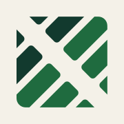
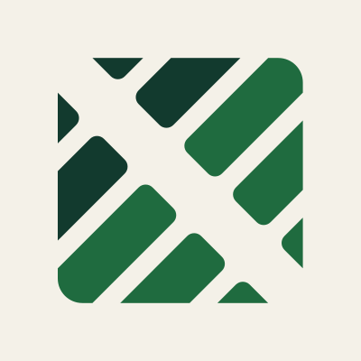

{{ c.name }}
{{ c.when }}
À faire. {{ c.dos }}
À ne pas faire. {{ c.donts }}
{{ c.a11y }}
{{ d.label }}
JungleRenov — design system v2 · octobre 2026
Tokens dans lib/components.css, composants dans lib/jr-v2.js (window.JRv2). Aucune valeur en dur dans le code des composants. À intégrer au design system.
Polices réellement rendues dans cet aperçu : {{ fontsReport }}
Symbole « progression » : hachures encre puis feuille vers le bas à droite. Mot en encre. Symbole de 32 px.
Symbole inversé : feuille, pousse, ivoire. Mot en ivoire.
Encre seule : imprimé, signatures d’e-mail, fonds chargés, et tout symbole sous 28 px (en-tête mobile : 24 px). Sous ce seuil, les hachures encre et feuille ne se distinguent plus.


Favicon, icône et avatar : version colorée sur ivoire, carré plein.{{ c.when }}
À faire. {{ c.dos }}
À ne pas faire. {{ c.donts }}
{{ c.a11y }}